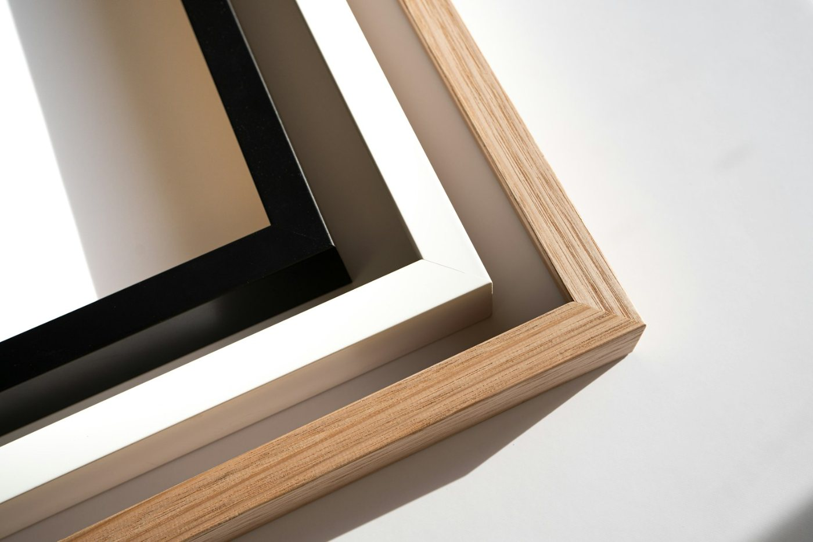

05 / 13
유리·아크릴
유리·아크릴은 작품 앞에 넣는 투명판 여섯 가지의 성질과 값입니다.
- 종류
- 6가지
- 값
- ㎡당 40,000원~260,000원
- 최소 값
- 작은 액자도 5,000원
나란히 견주기
둘을 고르면 아래에 나란히 놓인다. 셋째를 고르면 먼저 고른 것이 빠진다.
일반 유리 2 mm
- 가시광 투과율
- 90 %
- 자외선 차단
- 45 %
- 반사율
- 8 %
- 무게
- 5 kg/㎡
- 값
- 40,000원
- 더 걸리는 날
- 0 일
가장 흔한 판유리다. 깨지면 날카롭다
박물관 유리 2 mm
- 가시광 투과율
- 98 %
- 자외선 차단
- 99 %
- 반사율
- 0.8 %
- 무게
- 5 kg/㎡
- 값
- 260,000원
- 더 걸리는 날
- 2 일
양면 무반사 코팅에 자외선 차단 코팅을 더했다. 비스듬히 보면 옅은 보랏빛이 돈다
여섯 가지
- 일반 유리
㎡ 40,000원
가장 흔한 판유리다. 깨지면 날카롭다
- 저반사 유리
㎡ 70,000원
표면을 곱게 깎아 빛을 흩는다. 작품에서 떨어질수록 흐려 보인다
- 자외선 차단 유리
㎡ 120,000원 · 2일 더
코팅으로 자외선을 막는다. 수채화·사진처럼 바래기 쉬운 작품에 쓴다
- 박물관 유리
㎡ 260,000원 · 2일 더
양면 무반사 코팅에 자외선 차단 코팅을 더했다. 비스듬히 보면 옅은 보랏빛이 돈다
- 아크릴
㎡ 50,000원
유리 무게의 절반이 안 된다. 흠집이 나기 쉽고 정전기가 인다
- 자외선 차단 아크릴
㎡ 120,000원 · 2일 더
큰 액자·아이 방·택배로 보낼 액자에 쓴다
수치는 제품군의 일반 범위다. 같은 이름이라도 제품마다 다르다.